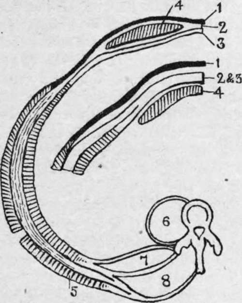
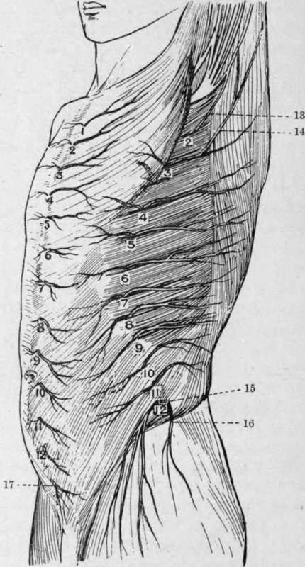

The Abdominal Parietes. Continued
Description
This section is from the book "Surgical Anatomy", by John A. C. MacEwen. Also available from Amazon: Surgical Anatomy.
The Abdominal Parietes. Continued
A separation of the recti, rarely extreme, occasionally occurs below the umbilicus, particularly after numerous pregnancies. The muscle is sometimes torn by muscular or other violence, the opisthotonos of tetanus, etc.
The pyramidalis muscle lies in front of the rectus, and within its sheath. It is triangular in shape, arising, when present, from the crest of the pubes to be inserted into the linea alba.
Poupart's ligament is indicated by a fold running in a slight curve with the convexity downwards from the anterior superior spine of the ilium to the spine of the pubes. Petit's triangle is situated above the middle cf the iliac crest, and is formed by the external oblique in front, and the latissimus dorsi behind, while its floor is formed by the internal oblique. Lumbar abscesses, and occasionally herniae, may point through the triangle.
In addition to the recti muscles, the anterior abdominal wall presents the external and internal oblique and transversalis muscles. It is important to remember the direction of the fibres of these muscles, as in many abdominal operations it is desirable to split the fibres of the muscles rather than cut them. The three sets of fibres present a Union Jack on the abdomen; those of the external oblique run downwards and inwards in the direction of the fingers when the hand is laid naturally on the front of the abdomen, those of the internal oblique run at right angles to those of the external, while those of the transversalis, as the name implies, run transversely. The external oblique arises from the eight lower ribs, and, becoming tendinous, is inserted into the outer lip of the iliac crest, Poupart's ligament, pubic spine, front of the symphysis (some fibres crossing to the opposite side at this point), and linea alba, or anterior sheath of the rectus. The internal oblique arises from the lumbar aponeurosis, anterior half of the iliac crest, and outer half of Poupart's ligament, and is inserted into the last three ribs, and, splitting to form the rectus sheath, into the seventh, eighth, and ninth costal cartilages and linea alba. The fibres arising from The semicircle presents the arrangement of the abdominal muscles below the level of the umbilicus. Note anteriorly how the tendon of the internal oblique splits to enclose the rectus muscle, the anterior portion being joined by the tendon of the external oblique and the posterior pwrtion by the tendon of the transversalis. The smaller diagram presents the arrangement of these parts about an inch above the pubes. Note how the tendon of the external oblique is separate and distinct from the others ; how the tendon of the internal oblique does not split to enclose the rectus, but, fused with that of the transversalis to form the conjoined tendon, passes in front of the rectus.
Fig. 19.-Scheme of Abdominal Muscles (in Section).
1. | External oblique. | 5. | Latissimus dorsi. |
2. | Internal oblique. | 6. | Psoas. |
3. | Transversalis. | 7. | Quadratus lumborum. |
4. | Rectus. | 8. | Erector spinae. |
Poupart's ligament go chiefly to form the conjoined tendon, along with the transversalis. A few of the lower fibres, however, are continued down in loops over the cord and testicle, and are finally inserted into the pubic spine and surrounding fascia. These fibres are generally named the cremaster muscle, and in the female, being chiefly represented by fascia, constitute the cremasteric fascia. The transversalis muscle arises from the under surfaces of the lower six ribs, the lumbar fascia, the anterior half of the inner lip of the iliac crest, and the outer one-third of Poupart's ligament. It is inserted into the posterior sheath of the rectus, and so to the linea alba and ensiform ; and the lower fibres, joined by those of the internal oblique, form the conjoined tendon. These three muscles are separated from one another by loose connective tissue, in which pus or other fluid may easily spread to the various insertions enumerated above, intraparietal hernice also occurring occasionally between the layers. The deep surface of the transversalis *is lined by the thin transversalis fascia. The transversalis fascia lines the inner surface of the abdominal wall, being best developed in the lower abdomen and in front, and becoming lost above upon the diaphragm, and posteriorly upon the fasciae of the quad-ratus lumborum and psoas. Eelow the semilunar fold of Douglas it is in intimate contact with the rectus until close to the symphysis, where it separates, leaving a triangular interval occupied by fatty tissue. Internally, it is attached to the crest of the pubes, and to Gimbernat's ligament, and externally to the outer half of Poupart's ligament, but between these points it extends into the thigh, forming the anterior layer of the femoral sheath. The extra- or subperitoneal tissue is a layer of fat-laden connective tissue which separates the fasciae of the abdominal muscles from the peritoneum (parietal portion), and also extends into the various mesenteries (visceral portion). It is further continued on the vessels, nerves, etc., which pass out from the abdomen. In this loose tissue abscesses arising from abdominal organs, particularly such as, like the kidney, are only partially covered by peritoneum, may readily spread. Abscesses arising from the appendix, kidney, and gall-bladder may also spread in this layer. The laxity cf this tissue used also to be taken advantage of in ligaturing the external and common iliac vessels without opening the peritoneum, the latter membrane being pushed* aside until the vessels were reached.
The abdominal wall is supplied by the lower seven dorsal and first lumbar nerves, which run forwards and downwards between the internal oblique and transversalis. Thus, the sixth dorsal supplies the region of the ensiform cartilage, the tenth dorsal the umbilicus, and the first lumbar the pubis, the various areas overlapping one another. These nerves supply both the skin and the underlying muscles, and thus any irritation of the skin, such as cold or a blow, produces an immediate contraction of the muscles, which thus tend to protect the underlying viscera. Further, the first six of these nerves are intercostal nerves, and control the respiratory movements to a considerable extent, so that when the skin of the abdomen is irritated there is a tendency to inspiration and fixation of the lower portion of the chest. When, therefore, it is desired to subject the abdomen to deep palpation, the hands should be warm, and should be laid flat on the surface, the fingers afterwards being gently pressed in. On the other hand, these same nerves are associated with the abdominal viscera through the sympathetic system, and thus in painful affections of these viscera there is generally rigidity of the abdominal muscles, sometimes very marked, the respiration being entirely thoracic, while the pain is referred along these nerves to the parietes, generally in the region of the umbilicus, the skin frequently being tender to the touch.
The abdominal viscera are connected through the solar plexus, splanchnic nerves, and rami communicantes with the segments of the spinal cord from the sixth dorsal to the first lumbar, while the-pelvic viscera are connected with those from the fifth lumbar to the third sacral through the nervi errigentes. (It will be noted that the second to the fourth lumbar nerves have no visceral connections.)
The stomach communicates with the sixth to the ninth dorsal, the liver and gall-bladder with the seventh to the tenth dorsal, the intestine with the ninth to the twelfth dorsal, and the testicle and ovary with the tenth dorsal. The kidney and ureter communicate with the tenth to the twelfth dorsal and the first lumbar ; the uterus with the tenth to the twelfth dorsal, first lumbar, and third and fourth sacral ; the rectum with the second to the fourth sacral.
It is important to remember that in spinal injuries and disease, such as tubercle or tumour formation, pain may be referred to the parietes over certain organs which may accordingly be presumed to be diseased. Thus, a sense of abdominal constriction, amounting in some cases to actual pain, and referred to the region of the umbilicus, may arise in Pott's disease, and be mistaken for intestinal colic, while pain from a lesion lower down might be mistaken as pointing to some affection of the kidney or bladder.
Fig. 20.-Cutaneous Nerves of the Trunk Antero-lateral View (After Henle.)
I-I2. Anterior cutaneous. | 2-12. Lateral cutaneous. | |
13. | I ntercosto-humeral. | 16. Iliac branch of ilio-hypogastric. |
14. | Additional intercosto-humeral. | 17. Hypogastric branch of iliohypogastric. |
15. | Lateral cutaneous of twelfth thoracic. |
The ilio-hypogastric and ilio-inguinal nerves are derived from the first lumbar, the former supplying part of the skin over the ilium and over the external ring, while the latter runs forward under the external oblique to supply the skin of the scrotum or labium majus, and of the upper and inner aspect of the thigh.
Continue to: